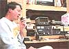
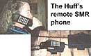
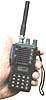
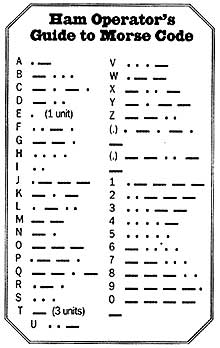

COUNTRY SKILLS
Keeping in touch off the grid.
Be it barren desert, wild jungle, or mountain wilderness that moves your spirit, provides you a temporary solace, or shelters you from the madness and din of "civilized life," you don't have to be rich to have your cake and eat it too. Not only can you thumb your nose at the power companies and run your computer all day off solar panels in the backyard or lounge in a hot tub fueled with propane or rooftop solar heaters, but now you are finally free of the indentured servitude of the telephone wires. Cellular phones, once just the playthings of overfed urban types in convertibles, have finally come of age. Those of us in beautiful isolated areas are the people who
really need wireless phones anyway, not for talking to our brokers or showing off, but for slightly more important things like saving lives in the event of sickness or accident.
Today, thanks to recent developments in wireless communication technology, telephone service is available to nearly everyone on the North American continent. While all forms of wireless telecommunication services may not presently be available in your area, there's sure to be at least two services to choose from right now, with others becoming available in the not too-distant future.
Cellular
By far the most popular of all wireless communication systems, cellular has the largest number of users (estimated 25 million at the end of 1995), and for good reason. Since its inception in 1983, cellular was the first mobile telephone service to provide private-line access (as opposed to "shared" or "party lines" where others can hear your conversations) in a phone receiver that anyone can easily operate. The similarity to a telephone receiver is a major improvement over hand-actuated microphones on radio transceivers, which have a tendency to intimidate non-radio users.
And equipment cost is generally reasonable. Mobile and transportable phones (which are both well suited for stationary installations) can be bought for less than $200. However, most vendors will sell phones at a major discount (or even throw in a phone for free) when you sign a one or two-year contract with them for cellular service. Airtime costs vary widely from one geographic location to another, as well as between cellular agents in the same locale. Typically, the more airtime you use the less cost per minute. Most agents will have a number of rate options to choose from. An example of a rate schedule for an average user might well be $25 per month base fee plus 50 cents per minute for the first minute of use, and 15-20 cents for additional minutes. Calls outside of the specified local coverage area are extra. Calls you receive count as airtime charged against you as well.
Cellular service is available in about 50 percent of United States territory. Naturally, major highways and cities are the first to receive coverage, with remote locales oftentimes being on the outskirts of strong signals. However, stationary installations have a unique advantage over mobile units since they can utilize much larger and consequently better performing antennas. Many resourceful individuals have managed to operate cellular phones in "no coverage" areas by installing directional yogi antennas on towers in remote locales.
Transportable or mobile phones are well suited to remote applications since both are powered by 12-volt D.C. connected via a cigarette lighter adapter. For 115-volt A.C. hookups, an inexpensive 12volt D.C. power supply with cigarette lighter adapter can be bought through most electronic parts stores, or through "J.C. Whitney Auto Accessories" catalog.
Specialized Mobile Radio (SMR)
SMR service is sweeping the countryside in an all-out effort to become cellular's number one competitor. Many metropolitan areas as well as some rather remote geographic locations in the United States (such as Michigan's Upper Peninsula) already have SMR coverage. Many more will have coverage in the next few years.
This is the type of system I use here in my remote cabin in the Upper Peninsula of Michigan. Though I'm located midway between two towers, I manage to get good reception 99 percent of the time, thanks to a large roof-mounted antenna. Reception suffers only during electrical storms, a common occurrence with many wireless phone systems.
According to Jeff Paul, of Range Telecommunications, Marquette, MI, SMR has two advantages over cellular. SMR transceivers are more power-fulable to utilize a full 12 watts compared to cellular's limit of 5 watts-and service, at least in this geographic region, is considerably less expensive. It's likely that service fees will also be highly competitive with cellular nationwide.
Current fees in this area are $25 per month base fee, which includes 100 minutes of local airtime. "Local" calls include all phone calls within the 906 area code (the entire Upper Peninsula). Additional minutes are 25 cents during peak usage hours on weekdays and 15 cents during evenings and weekends. Long distance calls include anywhere in the United States and are an additional 20 cents per minute. At these rates, a conscientious phone user can have nearly normal monthly phone bills.
Unfortunately, SMR phones are not inexpensive. New mobile units that automatically switch from tower to tower as you travel run about $750. However, SMR vendors may offer used units at a substantial discount. I purchased a used 12-watt unit for $250 and could have bought a 5-watt phone for $100. Both were considered somewhat obsolete since switching to different towers while traveling is a bit inconvenient. But these phones are perfect for stationary installations where you use the same tower for all your calling.
Like cellular, hookup for a remote SMR phone is simple. All you need is a 12-volt battery or 12-volt power supply fed by 120 A.C. I use two six-volt deep-cycle golf cart batteries charged with a 50-amp battery charger hooked to a small generator. SMR service technicians can advise you of the proper antenna to use for remote installation. Check the Yellow Pages in your area under "cellular," "wireless communications," or "telephones" to see if SMR service is available in your area.
Satellite Phone Service
The newest and most advanced wireless telecommunication system is satellite phone service. As might be expected, it's also the most expensive. Nevertheless, if you live somewhere between the Arctic Circle and the Panama Canal, satellite phone service will work. In fact, it also offers coverage hundreds of miles offshore in Hawaii, Puerto Rico, and the U.S. Virgin Islands. About the only place satellite coverage doesn't exist in North America is approximately one half of the northern and western portions of Alaska. Nome and Barrow are out of luck, but the area east of a line running roughly from Prudhoe Bay to the mouth of the Kukoswim River (including the Aleutian Islands) are covered.
Satellite service differs from SMR and cellular by totally eliminating the need for strategically located relay towers. Your phone signal is transmitted through a special high-gain dome antenna directly to a satellite placed in geosynchronous orbit 22,300 miles above the earth. In turn, this satellite bounces the signal back to an earth station where it is patched into the public phone network.
Now for the bad news. At the time of this writing, satellite phones cost about $3,200. A monthly access fee of $25 plus $1.49 per minute (calls within the contiguous U.S.) is currently being charged for service. As with any new technology, premium prices are likely to be the norm for the first few years. Hopefully once there are a large number of subscribers of satellite phone service, the cost of equipment and service will be within the reach of the average remote dweller's budget.
Skycell, the sole satellite phone service, will offer one service that may be of interest to remote cellular users who experience intermittent reception failures. Satellite roaming service will fill the gap and provide coverage if your cellular unit fails to operate due to weather conditions or other interference that long-range remote cellular users frequently encounter. You'll be able to access Skycell via dualmode satellite/cellular phones distributed through your cellular carrier. The same service charge of $25 per month and $1.49 per minute apply. Contact your local cellular carrier, or Skycell at 1-800-753-2672 or 1-800-872-6222.
Ham Radio
Don't underestimate ham radio as a remote wireless communications system. The name may be the same since the first ham communications at the turn of the century, but advances in modern radio equipment have been nothing short of phenomenal.
Radio operators today utilize small mobile and handheld FM radios to communicate in their local area via tower mounted repeater stations that relay their signals over a much farther distance, or allow you to direct dial a local phone number via auto patch. Computers linked to radios open up a new world to ham operators who can view current satellite weather maps, electronic billboard services and even a global position service which shows your exact location on the earth.
High Frequency (HF) radios enable users to contact other radio operators throughout the United States and around the world, and these folks are nearly always willing to patch your signal into their local phone network so you can talk with nonradio users abroad. Best of all, with the exception of repeater usage fees charged by the local radio clubs that built them (average annual fees are only $5-$25) all airtime via ham radio is absolutely free. My neighbor Terry recently demonstrated how effective and versatile ham radios are at his hunting camp, located a mile from where I live in the north woods.
With a mobile FM 2-meter transceiver linked to an auto battery for power, Terry managed to hit ten different repeaters which in turn covered all of the Upper Peninsula and parts of northern Wisconsin. As a paid subscriber to two of the repeaters with auto patch capabilities, Terry made a phone call by simply punching in the phone number on the keypad of his microphone. Autopatch allows subscribers to make phone calls within the local coverage area where the repeater is located, via radio. Even more impressive was Terry's handheld 2-meter FM radio (called HTs for Handy Talkies).
Small enough to fit in a shirt pocket, these low-watt units work exceptionally well within fairly close proximity to repeaters or other radio operators. When used in conjunction with larger better antennas and a power amplifier to boost signal strength, HTs can perform as well as larger higher wattage mobile units. They too have built-in keypads for autopatch. Terry operates a High Frequency radio to contact people all over the United States and around the globe. Each Sunday evening he contacts his son-in-law and daughter who live in Panama. They meet on a preselected "internet" frequency, then switch over to a less crowded frequency to chat. Like FM radios, High Frequency base as mobile radios both lend themselves well to remote-site application. Prices for new FM mobile radios average $350, with HTs starting out around $250. New HF radios start out around $800 and can cost $2,000 or more. Remote operators can also plan to spend a few hundred dollars for commercial manufactured antennas (though many hams build their own at substantial savings).
Used equipment of all kinds can be bought at big discounts through Amateur Radio Trader, 1-800-774-2623. Unlike the three other wireless telephone services, amateur radio does not offer private line access (you're always sharing the airways with others) and FCC licensing is required to operate ham radios. Consequently, the FCC enforces some fairly rigid rules, prohibiting profanity and prohibiting ham radio from commercial use of any kind. Phonepatch sessions are limited to five minutes, out of courtesy to others who may be waiting to use the same privilege, as well as to radio operators who must manually patch you into their home phone on the HF bands. Also, it's a widely held opinion by many ham radio operators that amateur radio shouldn't be used to routinely circumvent telephone service, when it is available. While remote dwellers without phone service don't apply here it should be noted that the best scenario is to recruit long-distance friends and relatives to become amateur radio operators with you.
For many, the savings in long distance in one year will pay for the equipment to get started. Needless to say, amateur radio is an incredible hobby that is cherished by people of all ages. Your first step in getting started in ham radio is getting licensed. This involves some study to learn FCC rules and regulations as well as radio theory. But don't be intimidated; many children have studied for and passed the tests the first time around. Ask any "ham" if it's worth the time and trouble and I'm willing to bet you'll get an unequivocal yes. Most people earn their techniciannocode license first. This allows voice privileges on the local FM bands without having to learn Morse code. For serious HF voice usage, trainees will need to
earn novice or higher ratings and learn Morse code (see below). If no radio clubs are listed locally, contact the American Radio Relay League (ARRL), 225 Main St., Newington, CT 06111 (1-860-594-0200).
They'll be glad to put you in touch with one. ARRL also sells a number of home study courses for exam preparation, publications dealing with all facets of the ham radio world, and a magazine, QST, through membership or at bookstores. Another good magazine is CQ the
Radio Amateur's Journal, found at many local bookstores, or call 1-800-853-9797 to subscribe. Ham radio is undoubtedly the most versatile and cost-effective communication system of all. An experienced ham operator can communicate anywhere in the world. Since it doesn't rely on phone networks to operate, ham radio, unlike the other three wireless phone systems, is the worldwide link during natural disasters and emergencies when phone service is knocked out. So keep in touch.
|
 Terry Parlato operating his high-frequency radio. |
Handie Talkie |
 |
|
 |
 |
|